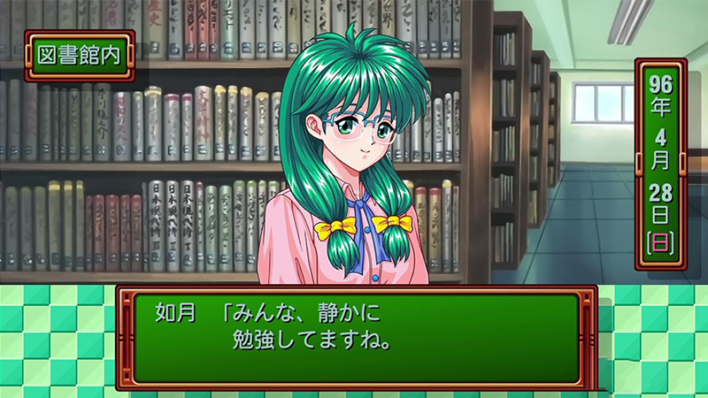
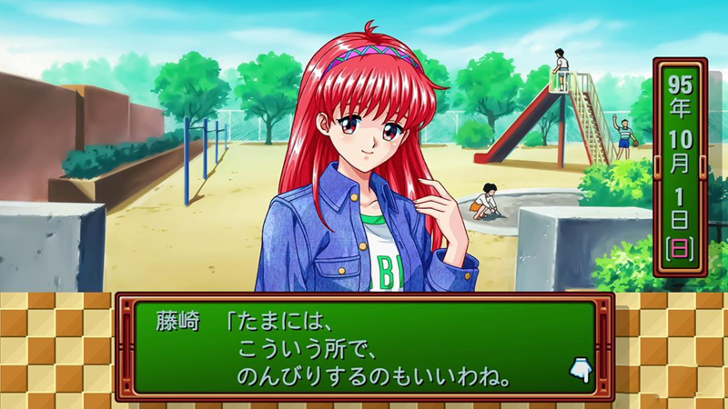

游戏概览
《心跳回忆》（ときめきメモリアル）是科乐美于1994年在PC Engine平台发售的一款恋爱模拟游戏。玩家扮演一名刚刚考入私立光辉高中的男生，在三年的高中生活中与12位性格各异的女主角相遇、相识、相恋，最终迎来毕业告白的那一天。
"这不是一款游戏，这是一段青春。它让无数玩家第一次体验到'被喜欢'的感觉，也第一次明白'喜欢一个人'需要付出怎样的努力。"
— 日本游戏杂志《Fami通》1994年评测游戏最大的创新在于"好感度系统"的引入。每位女主角都有隐藏的好感度数值，玩家的每一个选择、每一次约会、每一份礼物都会影响这个数字。当好感度达到一定程度，才能在毕业当天收到告白——反之，则可能孤独地结束高中生涯。
这种设计在1994年是革命性的。在此之前，电子游戏中的"恋爱"要么是剧情固定的过场动画，要么是简单的分支选项。《心跳回忆》第一次让恋爱成为了一个需要经营、需要策略、需要真心的系统。

十二位女主角
《心跳回忆》的成功，很大程度上归功于其精心设计的角色阵容。12位女主角各具特色，覆盖了当时日本ACG文化中几乎所有经典的女性 archetype：
藤崎诗织
主角的青梅竹马，成绩优秀、运动万能的完美少女。官方女主角，对感情比较含蓄，根据玩家加入的社团会出现鼓励事件。
虹野沙希
足球社/棒球社成员，活泼开朗、充满活力的运动型女孩，性格亲切友好，像太阳一样温暖。
片桐彩子
美术社/管乐社成员，富有艺术气息、自由奔放的女孩，热爱绘画和音乐，人气排行第三。
纽绪结奈
电脑社/科学社成员，天才科学少女，理性冷静，有时会有些古怪的发明和想法。
如月未绪
文学社/话剧社成员，文静优雅的文学少女，戴着眼镜，知性沉稳，与虹野沙希关系友好。
清川望
游泳社成员，性格认真、努力向上的游泳健将，短发造型，给人清爽正直的印象。
美树原爱
无固定社团，通过乱入事件登场。性格胆小害羞、非常怕生的学妹，像小动物一样可爱。
早乙女优美
篮球社成员，主角好友早乙女好雄的妹妹，活泼可爱有点任性，元气妹妹型角色。
镜魅罗
无固定社团，成熟艳丽、追求时尚的学姐。非常注重外表，容姿值低时很难讨好她。
伊集院丽
学生会长，高贵骄傲、唯我独尊的财阀千金，女扮男装。初期对主角态度冷淡，通过不断打电话可以逐渐了解其内心。
朝日奈夕子
无固定社团，天真烂漫、贪吃、喜欢玩乐的活泼学妹，有时会因为贪玩而耽误正事。
古式由加利
网球社成员，出身名门的大和抚子，礼仪端正，性格温柔体贴，有时会因家族规矩而感到束缚。
馆林见晴
隐藏角色，无固定社团。经常在暗处关注主角的神秘女孩，性格内向害羞，经常不小心撞到主角。
每位女主角都有独立的剧情线、专属事件和结局。想要看到全部内容，需要多次通关——这在当时是一个极具吸引力的设计，大大延长了游戏寿命。
原创玩法与机制
《心跳回忆》之所以能成为恋爱游戏的鼻祖，在于它开创了一系列被后世反复借鉴的核心机制：
好感度系统
首创隐藏数值系统，玩家的每个行为都会影响女主角的好感。这一机制成为日后所有恋爱游戏的标配。
时间管理
三年高中生活，每周需要安排学习和约会。如何在提升自身属性和追求心仪对象之间平衡，是核心策略。
礼物与约会
不同角色喜欢不同类型的礼物和约会地点。投其所好才能快速提升好感，这一设计增加了策略深度。
心跳事件
特定条件下触发的特殊剧情，通常伴有精美的CG和关键的好感度提升。是游戏最令玩家期待的部分。
毕业告白
游戏结局根据好感度决定。只有好感度最高的角色才会在毕业当天告白——也可能孤独终老。
属性养成
主角需要提升文、理、体、艺、容五项属性。不同角色对属性有不同要求，增加了重玩价值。

"《心跳回忆》开创性地将恋爱体验转化为可玩的游戏系统，让玩家在虚拟世界中学习如何与异性相处、如何表达情感。这种'情感教育'的功能，是它能够跨越时代持续打动玩家的根本原因。"
— 游戏评论历史意义与影响
《心跳回忆》在1994年的发售，标志着恋爱模拟游戏（Galgame/美少女游戏）作为一个独立品类的正式诞生。它的影响远远超出了游戏本身：
🌟 对游戏行业的影响
开创了"美少女游戏"品类
在《心跳回忆》之前，电子游戏中几乎没有以恋爱为核心玩法的作品。它证明了这个品类的商业可行性，直接催生了日后庞大的美少女游戏产业。
确立了恋爱游戏的基本框架
好感度系统、多女主角、分支剧情、CG收集、多结局……这些如今看来司空见惯的设计，都源自《心跳回忆》的创举。后世无数作品都在这个框架上进行微创新。
推动了角色经济的发展
《心跳回忆》的角色人气极高，催生了大量的周边商品、CD、小说、动画等跨媒体内容。这种"角色先行"的商业模式成为日后二次元产业的标配。
影响了整个东亚游戏文化
游戏在台湾、香港、韩国等地都引发了热潮，成为许多玩家的恋爱游戏启蒙。它对东亚ACG文化的影响至今仍在持续。
更重要的是，《心跳回忆》在文化层面也具有深远意义。在1990年代的日本，它提供了一种全新的情感体验方式——玩家可以在虚拟世界中体验恋爱的甜蜜与苦涩，而不必承担现实恋爱的风险。这种"安全的情感练习"，对于当时许多不善交际的年轻男性来说，具有特殊的吸引力。
"《心跳回忆》不仅仅是一款游戏，它是一个时代的文化符号。它代表了90年代日本社会对于'理想恋爱'的想象，也反映了那个时代年轻人的情感需求。"
— 日本文化研究者 东浩纪最终 verdict
三十年后再看《心跳回忆》，它的画面早已过时，系统也显得简陋。但它所开创的玩法框架、所塑造的角色魅力、所传递的情感体验，至今仍未褪色。
对于现代玩家，直接游玩原版可能会因为年代感而感到不适应。但如果你能接受复古的画面和系统，你会发现一个精心设计的、充满诚意的恋爱模拟体验——这种体验在今天已经很难找到了。
对于游戏从业者，《心跳回忆》是必学的经典案例。它展示了如何将抽象的情感体验转化为可玩的游戏系统，如何用有限的资源创造无限的情感价值。
🎯 推荐人群
恋爱游戏爱好者 · 游戏历史研究者 · 想体验品类起源的玩家
不推荐：对复古画面零容忍的玩家 · 追求快节奏体验的玩家
总评：9.2/10 — 恋爱游戏的鼻祖，一个时代的永恒记忆
"无论过去多少年，那份心跳的感觉，永远不会忘记。"